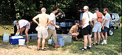

Ictiobine Collecting Network
|  | Putting up suckjers at Elkhorn Creek Landing (Kentucky River) with Mr. Sucker himself, Dr. Bob Jenkins (far left), Dr. Pat Ceas (third from left) and crews from Eastern Kentucky University, University of Tennessee and Tulane. |
| Electrofishing on Wisconsin River (upper Mississippi River Basin) at Prairie Du Sac, Wisconsin on a cold day in October, with Dr. John Lyons (in boat) and Scott Harpold of the Wisconsin DNR and Kyle Piller of Tulane. |
| Wisconsin River quillbacks (Carpiodes cyprinus? and C. forbesi?) |
| John Lyons (left) and Scott Harpold view the fruit of their effort: a hefty flathead catfish (Pylodictis olivaris). |
| Preparing to electrofish James River at Bosher's Dam near Richmond, VA, with Dr. Steve McIninch of Virginia Commonwealth University (left) and Mike Taylor of Tulane MNH. |
| James River quillback form (topotypic Carpiodes cyprinus) |
| Tom Shepard of the Alabama Geological Survey dipping carpusckers in Choctawhatchee River near Geneva, AL. |
| Choctawhatchee River quillback (Carpiodes cyprinus?) |
Return to Field Work